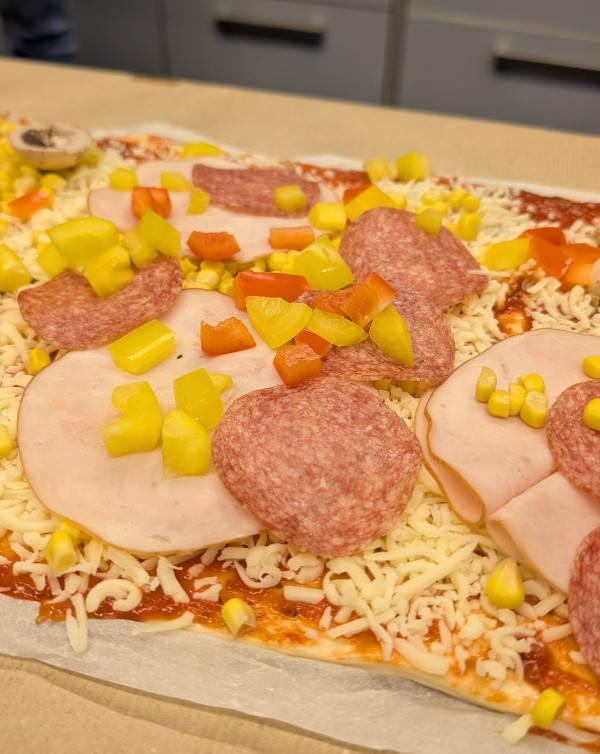
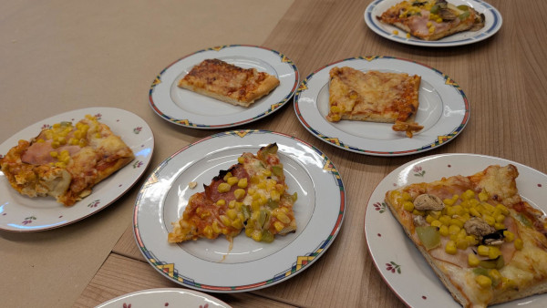

Was muss man alles machen, um eine Website zu erstellen?
Planung
Zuerst müssen wir uns überlegen, was unsere Website alles können soll und wie sie aussehen soll. Das ist wie bei einer Pizza. Auch hier müssen wir uns überlegen, was alles auf die Pizza soll.
Umsetzung
Wir müssen jetzt unsere Website programmieren. Dabei setzen wir das um, was wir uns in der Planung überlegt hatten. Eine Pizza muss umgesetzt werden. Das bedeutet, dass wir sie mit den geplanten Zutaten belegen müssen.
Auslieferung
Wenn Pizza und Website fast fertig sind, kommt die Auslieferung. Die Pizza kommt in den Ofen und wird später in der Küche getestet. Die Website müssen wir ins Internet hochladen. Das nennt man Deployen.
Testen
Jetzt überprüfen wir, ob alles so geworden ist, wie wir es geplant haben. In der Softwareentwicklung nennen wir das "Testen". Beim Testen wird nicht nur wild herumprobiert, sondern es wird nach einem Plan vorgegangen.
